Ненашева Яна
Создать фирменный стиль для персонального бренда «Ненашева Ума Дело»
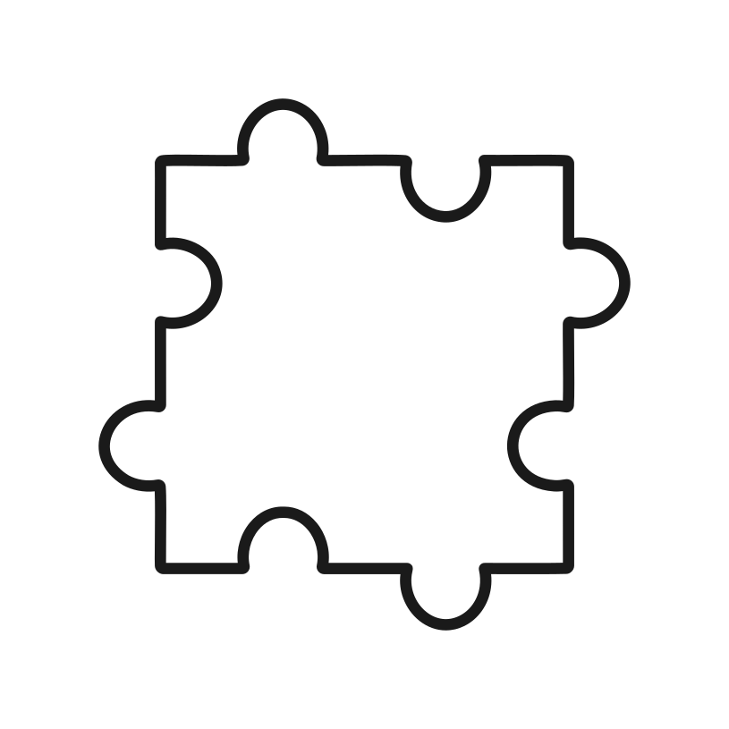
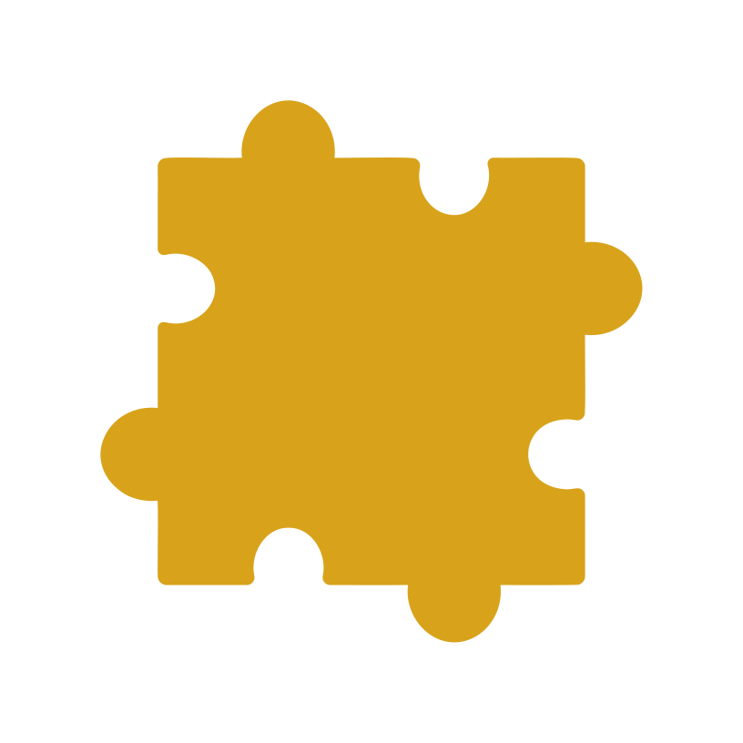
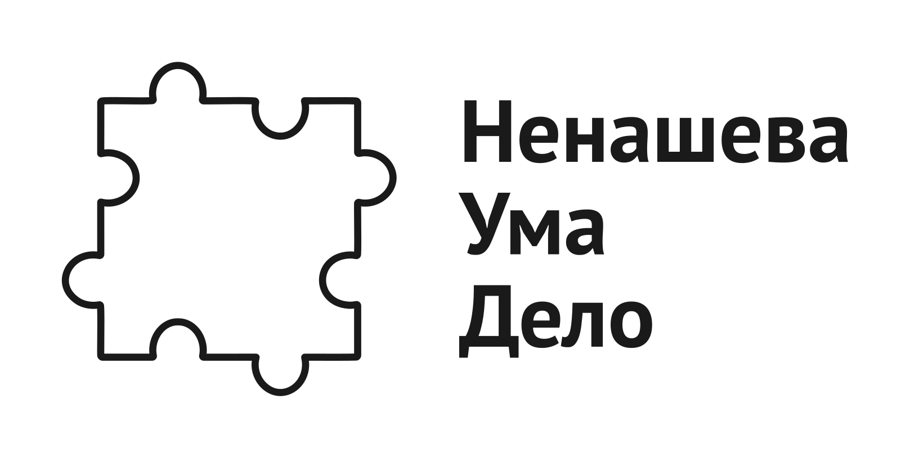
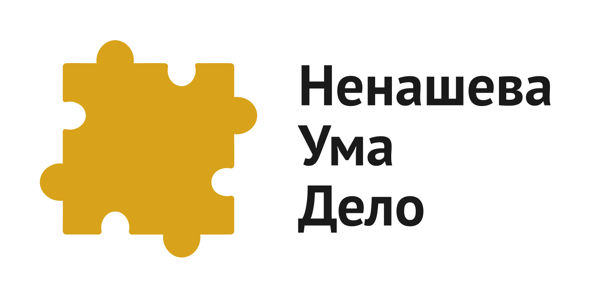
Логотип выполнен в виде абстрактного пазла, где на каждой из четырёх сторон — и углубление, и выпуклость.
Этот символ — визуальная метафора Яны:
- Она многогранна, легко переключается между ролями и сферами — от дизайна до спорта, от аналитики до эмоции.
- Она гибка и универсальна — находит язык с любым человеком, работает с самыми разными задачами, пространствами, стилями.
- Она интуитивна, но структурна — умеет быть одновременно творческой и рациональной.
Знак отражает идею взаимного контакта и гармонии Яны, где каждый элемент находит своё место, как в пазле.
Охранные поля
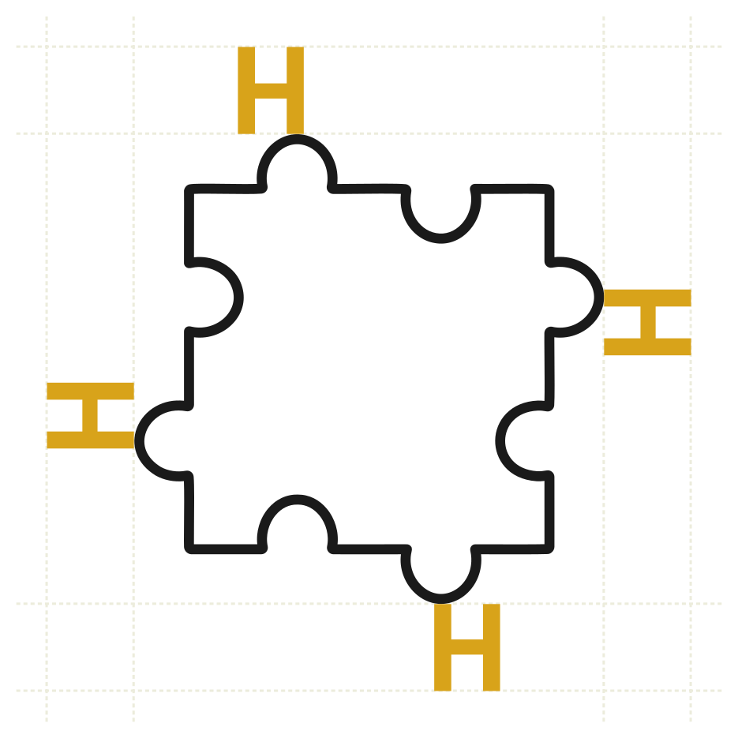
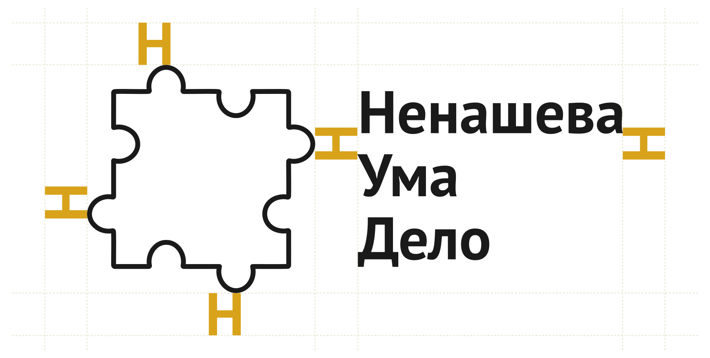
Охранное поле базируется на высоте большой буквы "Н" из слова "Ненашева" в комбинированном логотипе. Минимальное расстояние от края логотипа до любых других элементов (текст, изображения, границы) должно быть не менее 1,5 высоты буквы "Н". Это правило применимо ко всем носителям (печать, цифровые платформы, мерчандайзинг).
Цветовая палитра
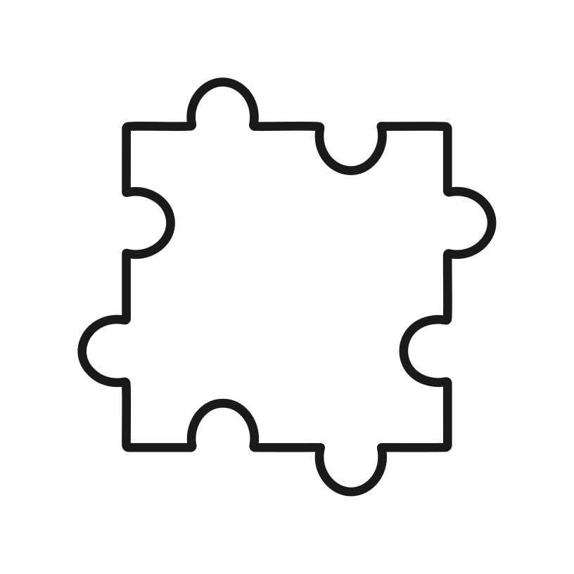
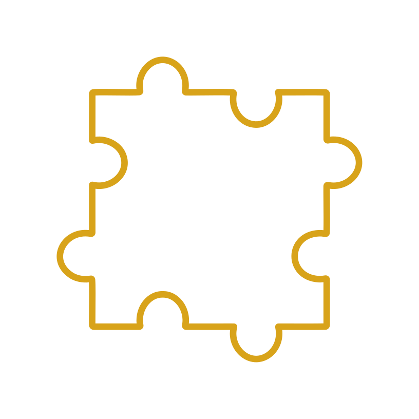
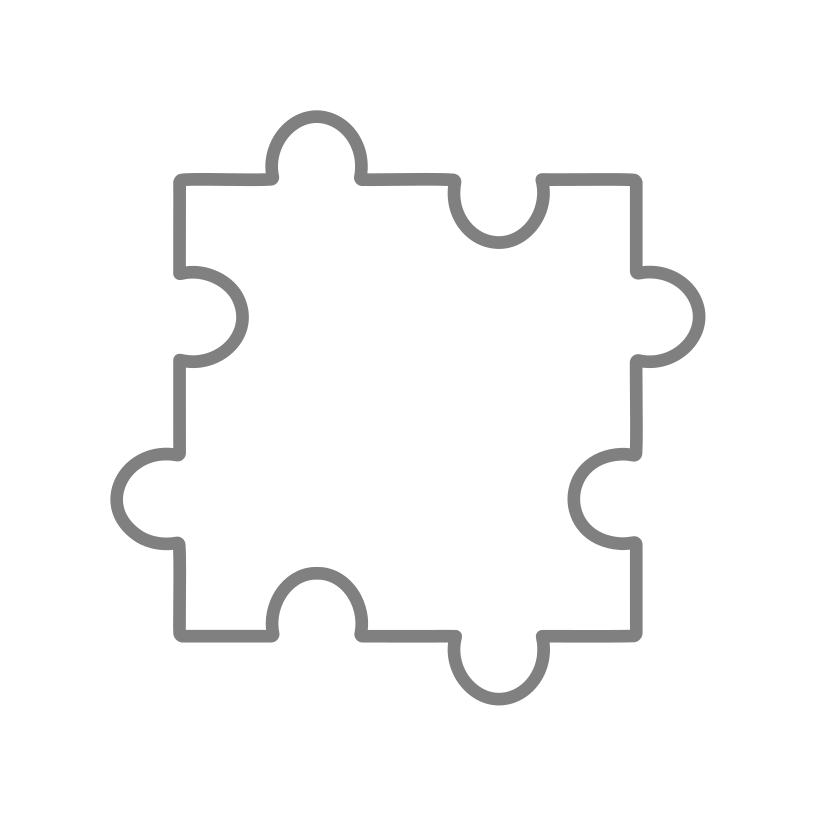
Размеры и масштабирование
Минимальный размер для печати: 1 см в ширину (знаковый логотип) и 2 см в ширину (комбинированный логотип).
Сохраняй оригинальные пропорции логотипов. Избегай растяжения или сжатия; используй только масштабирование.
Горчичный
#D8A31A
Графитовый
#1A1A1A
Изумрудный
#007F6D
Светло-серый
#DADADA
Шоколадный
#3E2C23
Цветовая палитра — это баланс между смелостью и глубиной, жизнью и структурой. Оттенки не просто украшают, а транслируют суть личности и бренда.
Пропорции использования цветов
| Название | HEX | Роль | Пропорция в работе |
|---|---|---|---|
| Горчичный | #D8A31A | Акценты, упаковка | 15-25% |
| Графитовый | #1A1A1A | Тексты, контуры | 20-30% |
| Изумрудный | #007F6D | Глубина, премиум | 10-15% |
| Светло-серый | #DADADA | Фон, подложка | 35-45% |
| Шоколадный | #3E2C23 | Детали, текстиль | 5-10% |
Посмотрите как это может выглядеть в интерфейсе.
Шрифт PT Sans — гуманистический гротеск. Он строго информативен, но при этом открыт, человечен и легко читаем. Идеально соответствует бренду Яны: внутри — эмоция, снаружи — структура. Это не просто гарнитура, а целая типографическая история, отражающая культурную и лингвистическую идентичность. Далее несколько интересных фактов о нём.
PT Sans был создан в рамках проекта «Общедоступные шрифты» по заказу Роспечати, чтобы обеспечить поддержку всех языков народов Российской Федерации. Он включает символы для 54 титульных языков, что делает его уникальным инструментом для межкультурной коммуникации. Суммарно шрифт PT Sans имеет поддержку 133 языков.
Шрифт разработан Александрой Корольковой при участии Ольги Умпелевой и под руководством Владимира Ефимова в студии ParaType. Их цель была создать универсальный и современный шрифт, сочетающий традиции российской типографики с гуманистическими тенденциями.
PT Sans распространяется под открытой лицензией SIL Open Font License, что позволяет использовать его как в коммерческих, так и в некоммерческих проектах. Это делает его отличным выбором для веб-дизайна, печатной продукции и интерфейсов.
В 2011 году PT Sans и его родственный шрифт PT Serif были удостоены бронзовой награды European Design Awards в номинации «Оригинальная гарнитура», что подтверждает высокое качество и актуальность их дизайна.
PT Sans — это шрифт, который сочетает в себе культурное наследие, техническую продуманность и современный дизайн, делая его отличным выбором для проектов, стремящихся к универсальности и глубине.
Роль: основной текст, описания, подписи.
Где использовать?
- Абзацы в презентациях
- Тексты на сайте
- Описание постов в соцсетях
Роль: заголовки и смысловые акценты.
Где использовать?
- Заголовки секций и блоков
- Выделение важных слов или тезисов
- CTA-кнопки («Смотреть проект», «Написать Яне»)
Роль: вставки, цитаты, эмоциональные интонации.
Где использовать?
- Цитаты Яны
- Комментарии от руки, «внутренний голос»
- Подписи под фото, сторителлинг-элементы
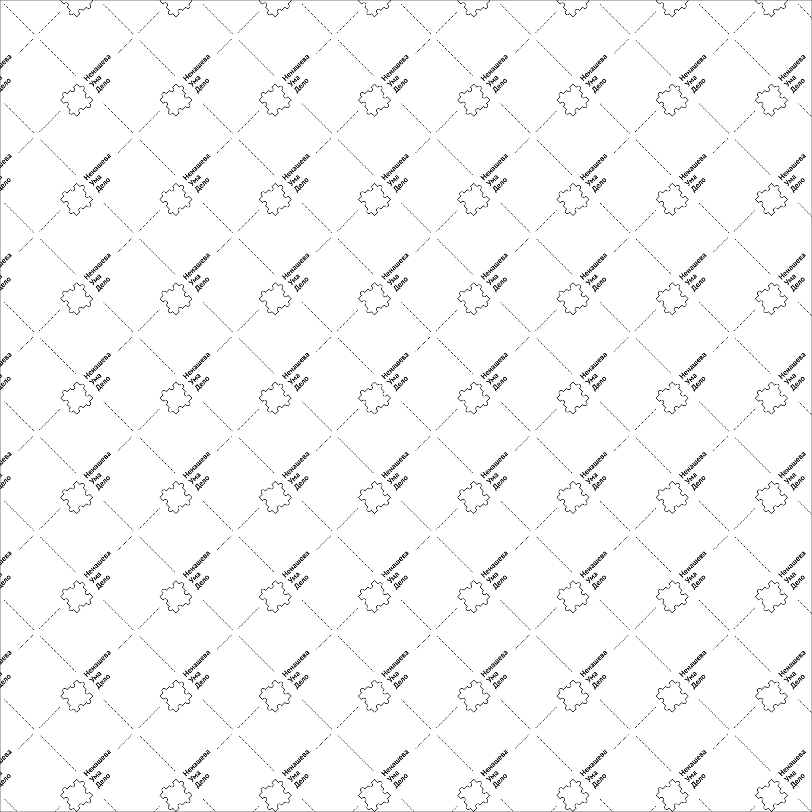
Водяной знак — это элемент, который помогает защитить ваш контент от копирования и использования без разрешения. Он создан на основе логотипа "Ненашева Ума Дела" (лого-знак + текст). Водяной знак помогает вам контролировать использование вашего контента и обеспечивает вам право на его использование.
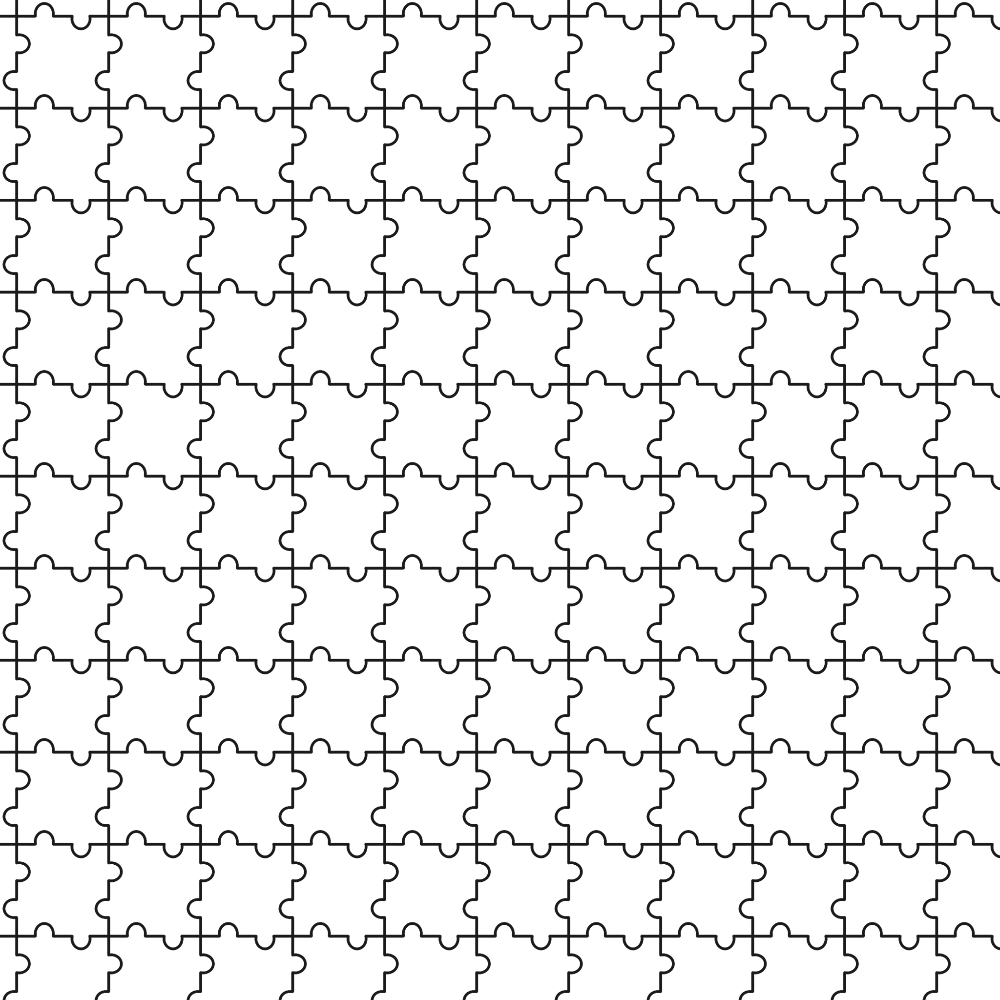
Паттерн — это повторяющийся рисунок, который помогает создать уникальный визуальный образ бренда. Он создан из логотипа "Ненашева Ума Дела" и представляет собой повторяющийся элемент пазла.
Иконки представлены в минималистичном стиле и охватывают категории: коммуникация, творчество, интерьер, идеи и проекты. Они предназначены для цифровых и печатных материалов.

Шейпы включают геометрические и абстрактные формы (спирали, пазлы, круги), добавляя динамику дизайну. Они созданы на основе логотипа "Ненашева Ума Дела".
Нажмите книпку ниже, чтобы скачать все материлы по данному проекту.
Если остались вопросы или появился новый запрос — напишите нам.